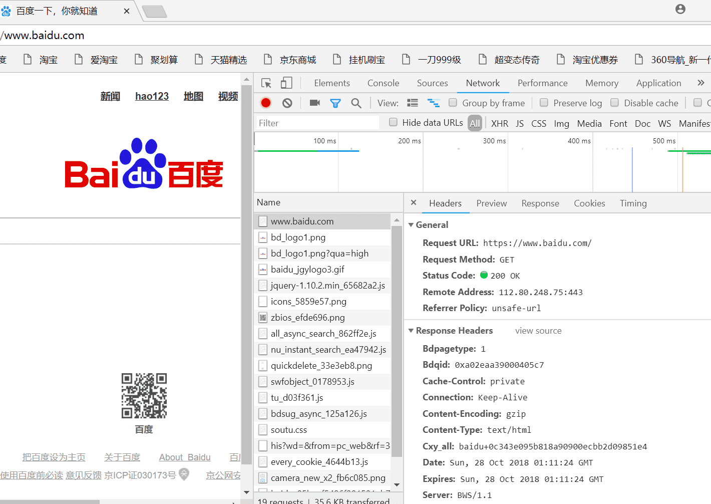
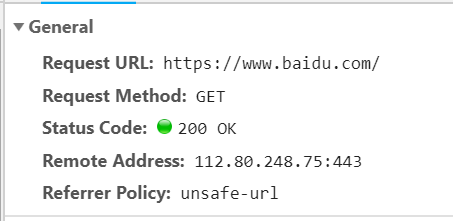
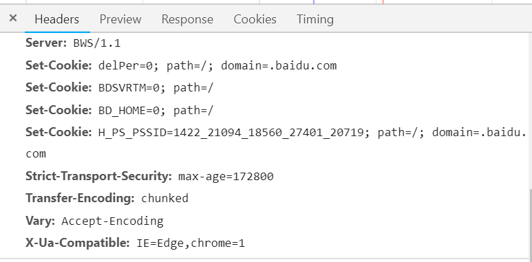
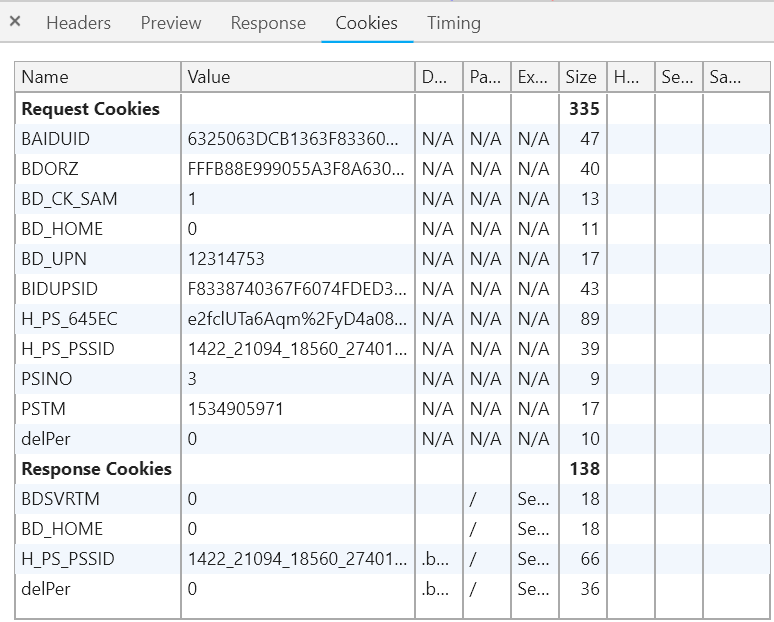
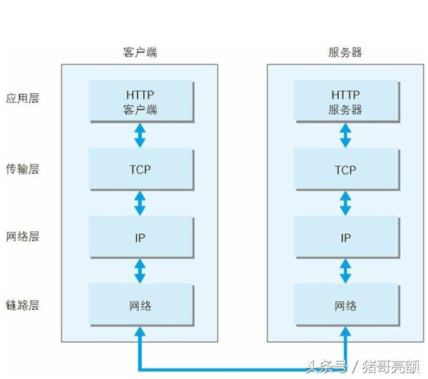
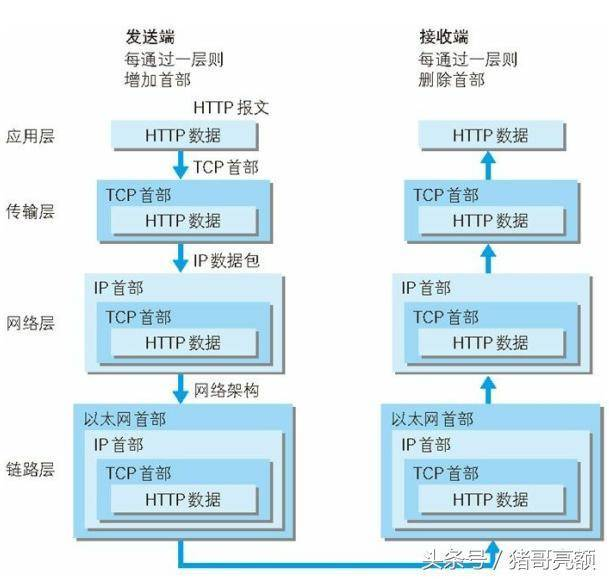

参考链接：
URL:https://www.baidu.com
域名：baidu.com
IP地址：112.80.248.75
服务器：www
网站名：www.baidu.com
协议：https
域名的解析是从右往左的，越往右域名级别越高
利用F12开发者检查工具可以查看网页加载过程中需要加载的一些数据，以及其加载时间。


其中200 OK 代表服务器请求成功
GET 表示https请求方法
URL：Uniform Resource Locator统一资源定位符
CDN的全称是Content Delivery Network，即内容分发网络。
其目的是通过在现有的Internet中增加一层新的网络架构，将网站的内容发布到最接近用户的网络”边缘”，使用户可以就近取得所需的内容，解决Internet网络拥塞状况，提高用户访问网站的响应速度。从技术上全面解决由于网络带宽小、用户访问量大、网点分布不均等原因，解决用户访问网站的响应速度慢的根本原因。
网络服务器 是网络环境下为客户提供某种服务的专用计算机。
服务器是一种被动程序：只有当Internet上运行其他计算机中的浏览器发出的请求时，服务器才会响应
最常用的Web服务器是Apache和Microsoft的Internet信息服务器（Internet Information Services，IIS）。
WEB服务器也称为WWW(WORLD WIDE WEB)服务器，主要功能是提供网上信息浏览服务。
【网页的两种类型】
静态
静态：静态Web 文档是一个存储于Web服务器的文件。静态文档的作者在写作的时候确定文档的内容。由于文档内容不会变化，所以对静态文档的每次访问都返回相同结果。
动态
动态：动态web文档不是以一个预先定义的格式存在，而是在浏览器访问web服务器时创建。当一个请求到达时，web服务器运行一个应用程序创建动态文档（dynamic documents），服务器返回程序的输出作为应答。由于每次访问都要创建新的文档，动态文档的内容是变化的。
【什么是cookie文件】
cookie （储存在用户本地终端上的数据）
Cookie就是服务器暂存放在你计算机上的一笔资料，好让服务器用来辨认你的计算机。当你在浏览网站的时候，Web服务器会先送一小小资料放在你的计算机上，Cookie 会帮你在网站上所打的文字或是一些选择，都记录下来。当下次你再光临同一个网站，Web服务器会先看看有没有它上次留下的Cookie资料，有的话，就会依据Cookie里的内容来判断使用者，送出特定的网页内容给你。
终端：终端（Terminal）也称终端设备，是计算机网络中处于网络最外围的设备，主要用于用户信息的输入以及处理结果的输出等。如PC端.
【查看cookie文件】


【两种存储方式】
LocalStorage:对象负责存储没有到期的数据。当Web页面或浏览器关闭时，仍会保持数据的存储
SessionStorage：对象负责存储一个会话的数据。如果用户关闭了页面或者浏览器，则会销毁数据。
【HTTP协议】
HTTP协议在网络上传输的图解


———ps：需要了解Iconfont的用法（后续）———-
异步加载：加载数据时仍然执行其他程序
【网络相关】
【ARP】 是一种用以解析地址的协议，根据通信方的IP地址就可以反查出对应的MAC地址。
【DNS】作用也类似：DNS协议提供通过域名查找IP地址，或逆向从IP地址反查域名的服务。
【TCP】（Transmission Control Protocol 传输控制协议）是一种面向连接的、可靠的、基于字节流的传输层通信协议。
【UDP】 是OSI参考模型中一种无连接的传输层协议，提供面向事务的简单不可靠信息传送服务
【RFC】 Request for Comments， 征求修正意见书。一些用来制定HTTP协议技术标准的文档
主体（entity body）
HTTP协议：无状态协议
【网关】 大家都知道，从一个房间走到另一个房间，必然要经过一扇门。同样，从一个网络向另一个网络发送信息，也必须经过一道“关口”，这道关口就是网关。顾名思义，网关（Gateway） [1] 就是一个网络连接到另一个网络的“关口”。也就是网络关卡。
- 集线器
- 交换机
路由器
集线器 就是HUB。可以简单的理解为将一些机器连接起来组成一个局域网。而 交换机（又名交换式集线器）作用与 集线器 大体相同。但是两者在性能上有区别：集线器 采用的是共享带宽的工作方式，而 交换机 是独享带宽。在机器很多或数据量很大时，两者将会有比较明显的。
路由器 与以上两者有明显区别，它的作用在于连接不同的网段并且找到网络中数据传输最合适的路径 。 路由器 是产生于交换机之后，就像 交换机 产生于集线器之后。 路由器 主要克服了 交换机 不能路由转发数据包的不足。
不同点：
1.【工作层次不同】
交换机是工作在OSI／RM开放体系结构的数据链路层，而路由器一开始就设计工作在OSI模型的网络层。由于交换机工作在OSI的第二层（数据链路层），所以工作原理比较简单，而路由器工作在OSI的第三层（网络层），可以得到更多的协议信息，路由器可以做出更加智能的转发决策。
2.【数据转发所依据的对象不同】
交换机是利用物理地址或者说MAC地址来确定转发数据的目的地址。而路由器则是利用不同网络的ID号（即IP地址）来确定数据转发的地址。
IP地址是在软件中实现的，描述的是设备所在的网络，有时这些第三层的地址也称为协议地址或者网络地址。MAC地址通常是硬件自带的，由网卡生产商来分配的，而且已经固化到了网卡中去，一般来说是不可更改的。而IP地址则通常由网络管理员或系统自动分配。
3.【传统的交换机只能分割冲突域，不能分割广播域；而路由器可以分割广播域】
4.【路由器提供了防火墙的服务】
【ECMP:等价路由】
如果使用传统的路由技术，发往该目的地址的数据包只能利用其中的一条链路，其它链路处于备份状态或无效状态，并且在动态路由环境下相互的切换需要一定时间，而等值多路径路由协议可以在该网络环境下同时使用多条链路，不仅增加了传输带宽，并且可以无时延无丢包地备份失效链路的数据传输。
ECMP最大的特点是实现了等值情况下，多路径负载均衡和链路备份的目的，在静态路由和OSPF中基本上都支持ECMP功能。
内存与外存
- 内存
- 随机存储器（RAM）
- 只读存储器（ROM）
- 高速缓冲存储器（Cache）
- 外存
【内存】
RAM：随机存储器（Random Access Memory）表示既可以从中读取数据，也可以写入数据。当机器电源关闭时，存于其中的数据就会丢失。
ROM：ROM表示只读存储器（Read Only Memory），在制造ROM的时候，信息（数据或程序）就被存入并永久保存。这些信息只能读出，一般不能写入，即使机器停电，这些数据也不会丢失。
Cache：就是平常看到的一级缓存(L1 Cache）、二级缓存(L2 Cache）、三级缓存(L3 Cache）这些数据，它位于CPU与内存之间，是一个读写速度比内存更快的存储器。当CPU向内存中写入或读出数据时，这个数据也被存储进高速缓冲存储器中。当CPU再次需要这些数据时，CPU就从高速缓冲存储器读取数据，而不是访问较慢的内存，当然，如需要的数据在Cache中没有，CPU会再去读取内存中的数据。
【外存】
外储存器：指除计算机内存及CPU缓存以外的储存器，此类储存器一般断电后仍然能保存数据。常见的外存储器有硬盘、软盘、光盘、U盘等。